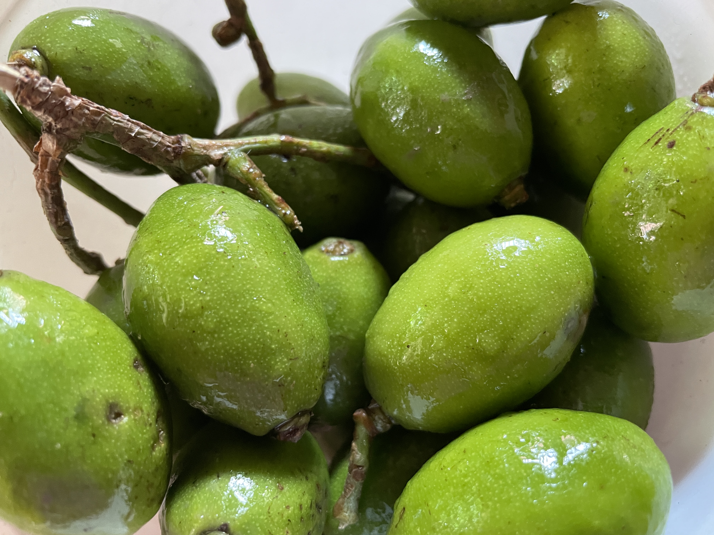
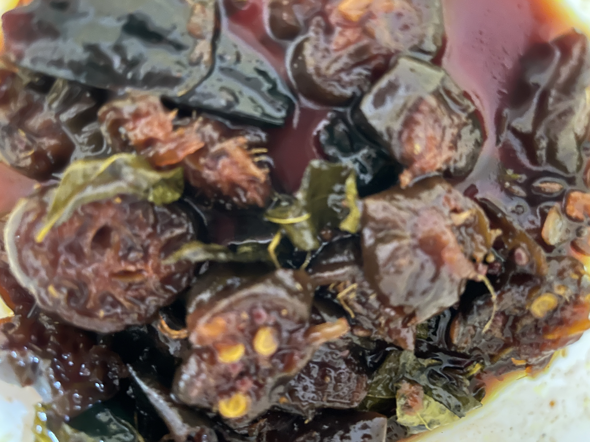

In West Bengal, Gur Aam (mango cooked in jaggery with spices) is a delicacy. Made with green, raw mangoes, bottled, and left to dry in the sun during the summer months, this delicacy invariably tempts little boys, particularly those looking for trouble during the long hot afternoons. Many a story has been told of broken pickle bottles and repurcussions thereafter.

During the monsoon months (July - August), Amra (Spondias mombin) or Hog Plum - the sour tangy cousin of mango is plentiful. A native to the tropical Americas (including the West Indies), the tree was introduced by the Portuguese in South Asia in the beginning of the 17th century.
My delight knew no bounds when I found a middle-aged woman standing under an umbrella in the pouring rain at a local market, selling fresh hog plums from her garden. She had come down all the way from Tiluri, a rural town in Bankura to my hometown of Asansol (specifically to the Burnpur vegetable market) to sell these delicacies! I thought she would charge me a fortune for them - but lo and behold! She simply told me they would be ten rupees -- these days even bus fares are more than that in metropolitan cities.
Armed with this tangy cousin of the mango, I decided to pickle it with jaggery. 